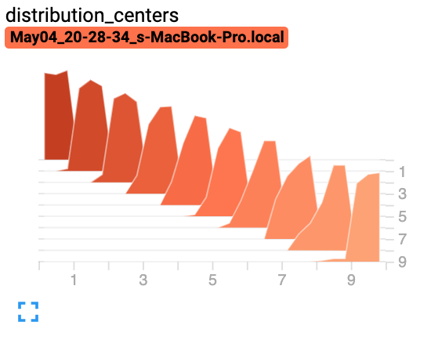
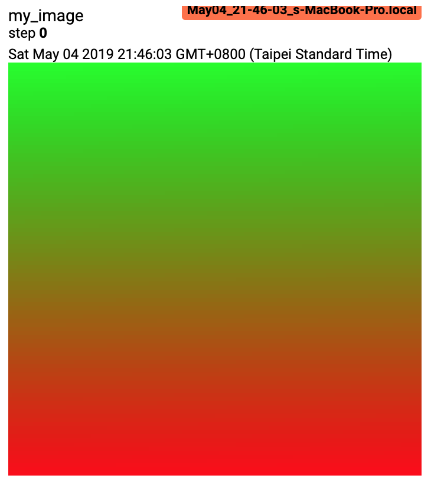
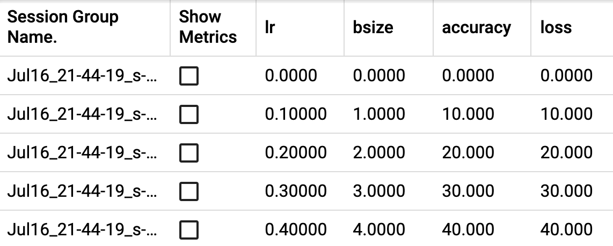

torch.utils.tensorboard¶
在继续之前，更多关于 TensorBoard 的详细信息可以在 https://www.tensorflow.org/tensorboard/找到。
安装 TensorBoard 后，这些实用工具允许您将 PyTorch 模型和指标记录到目录中，以便在 TensorBoard UI 中进行可视化。支持对 PyTorch 模型和张量以及 Caffe2 网络和块进行标量、图像、直方图、图表和嵌入可视化。
SummaryWriter 类是您记录数据以供 TensorBoard 消费和可视化的主要入口。例如：
import torch
import torchvision
from torch.utils.tensorboard import SummaryWriter
from torchvision import datasets, transforms
# Writer will output to ./runs/ directory by default
writer = SummaryWriter()
transform = transforms.Compose([transforms.ToTensor(), transforms.Normalize((0.5,), (0.5,))])
trainset = datasets.MNIST('mnist_train', train=True, download=True, transform=transform)
trainloader = torch.utils.data.DataLoader(trainset, batch_size=64, shuffle=True)
model = torchvision.models.resnet50(False)
# Have ResNet model take in grayscale rather than RGB
model.conv1 = torch.nn.Conv2d(1, 64, kernel_size=7, stride=2, padding=3, bias=False)
images, labels = next(iter(trainloader))
grid = torchvision.utils.make_grid(images)
writer.add_image('images', grid, 0)
writer.add_graph(model, images)
writer.close()
然后，可以使用 TensorBoard 进行可视化，它应该可以通过以下命令安装和运行：
pip install tensorboard
tensorboard --logdir=runs
一个实验可以记录大量信息。为了避免界面杂乱并实现更好的结果聚类，我们可以通过分层命名来对图表进行分组。例如，“Loss/train”和“Loss/test”将一起分组，而“Accuracy/train”和“Accuracy/test”将在 TensorBoard 界面中分别分组。
from torch.utils.tensorboard import SummaryWriter
import numpy as np
writer = SummaryWriter()
for n_iter in range(100):
writer.add_scalar('Loss/train', np.random.random(), n_iter)
writer.add_scalar('Loss/test', np.random.random(), n_iter)
writer.add_scalar('Accuracy/train', np.random.random(), n_iter)
writer.add_scalar('Accuracy/test', np.random.random(), n_iter)
预期结果：

- class torch.utils.tensorboard.writer.SummaryWriter(log_dir=None, comment='', purge_step=None, max_queue=10, flush_secs=120, filename_suffix='')[source][source]¶
直接将条目写入到 log_dir 中的事件文件，供 TensorBoard 使用。
SummaryWriter 类提供了一个高级 API，用于在指定目录中创建事件文件，并向其中添加摘要和事件。该类异步更新文件内容。这使得训练程序可以直接从训练循环中调用方法向文件添加数据，而不会减慢训练速度。
- __init__(log_dir=None, comment='', purge_step=None, max_queue=10, flush_secs=120, filename_suffix='')[source][source]¶
创建一个 SummaryWriter，用于将事件和摘要写入事件文件。
- 参数:
log_dir（字符串）- 保存目录位置。默认为 runs/CURRENT_DATETIME_HOSTNAME，每次运行后都会更改。使用分层文件夹结构可以轻松比较不同运行。例如，为每个新实验传入‘runs/exp1’，‘runs/exp2’，等，以便跨实验进行比较。
comment（字符串）- 将注释附加到默认的 log_dir 后缀
log_dir。如果已分配log_dir，则此参数无效。purge_step（整数）- 当在步骤 记录崩溃并在步骤 重启时，任何全局步骤大于或等于 的事件将被清除并从 TensorBoard 中隐藏。请注意，崩溃并恢复的实验应具有相同的
log_dir。max_queue (int) – 等待事件和摘要队列的大小，在执行一个‘add’调用之前，队列大小达到一定数量会强制将数据刷新到磁盘。默认为十个项目。
flush_secs (int) – 多久（以秒为单位）将等待事件和摘要刷新到磁盘。默认为每两分钟刷新一次。
filename_suffix (str) – 添加到 log_dir 目录中所有事件文件名的后缀。有关文件名构建的更多详细信息，请参阅 tensorboard.summary.writer.event_file_writer.EventFileWriter。
示例：
from torch.utils.tensorboard import SummaryWriter # create a summary writer with automatically generated folder name. writer = SummaryWriter() # folder location: runs/May04_22-14-54_s-MacBook-Pro.local/ # create a summary writer using the specified folder name. writer = SummaryWriter("my_experiment") # folder location: my_experiment # create a summary writer with comment appended. writer = SummaryWriter(comment="LR_0.1_BATCH_16") # folder location: runs/May04_22-14-54_s-MacBook-Pro.localLR_0.1_BATCH_16/
- add_scalar(tag, scalar_value, global_step=None, walltime=None, new_style=False, double_precision=False)[source][source]¶
将标量数据添加到摘要中。
- 参数:
标签（字符串）- 数据标识符
scalar_value（浮点数或字符串/ blobname）- 要保存的值
global_step（整数）- 要记录的全局步长值
walltime（浮点数）- 可选覆盖默认 walltime（time.time()）以事件纪元后的秒数
new_style（布尔值）- 是否使用新样式（tensor 字段）或旧样式（simple_value 字段）。新样式可能导致数据加载更快。
示例：
from torch.utils.tensorboard import SummaryWriter writer = SummaryWriter() x = range(100) for i in x: writer.add_scalar('y=2x', i * 2, i) writer.close()
预期结果：
- add_scalars(main_tag, tag_scalar_dict, global_step=None, walltime=None)[source][source]¶
将许多标量数据添加到摘要中。
- 参数:
main_tag（字符串）- 标签的父名称
tag_scalar_dict（字典）- 存储标签及其对应值的键值对
global_step（整数）- 用于记录的全局步长值
walltime（浮点数）- 可选覆盖默认 walltime（time.time()）自纪元以来事件经过的秒数
示例：
from torch.utils.tensorboard import SummaryWriter writer = SummaryWriter() r = 5 for i in range(100): writer.add_scalars('run_14h', {'xsinx':i*np.sin(i/r), 'xcosx':i*np.cos(i/r), 'tanx': np.tan(i/r)}, i) writer.close() # This call adds three values to the same scalar plot with the tag # 'run_14h' in TensorBoard's scalar section.
预期结果：
- add_histogram(tag, values, global_step=None, bins='tensorflow', walltime=None, max_bins=None)[source][source]¶
将直方图添加到摘要中。
- 参数:
标签（str）- 数据标识符
values（torch.Tensor，numpy.ndarray 或字符串/blobname）- 构建直方图所需的值
global_step（int）- 记录的全局步长值
bins（str）- 以下选项之一：{‘tensorflow’，’auto’， ‘fd’，…}。这决定了如何创建 bins。其他选项请参考：https://docs.scipy.org/doc/numpy/reference/generated/numpy.histogram.html
walltime（浮点数）- 可选覆盖默认 walltime（time.time()）自纪元以来事件经过的秒数
示例：
from torch.utils.tensorboard import SummaryWriter import numpy as np writer = SummaryWriter() for i in range(10): x = np.random.random(1000) writer.add_histogram('distribution centers', x + i, i) writer.close()
预期结果：

- add_image(tag, img_tensor, global_step=None, walltime=None, dataformats='CHW')[source][source]¶
将图像数据添加到摘要中。
注意这需要
pillow包。- 参数:
标签（str）- 数据标识符
img_tensor（torch.Tensor、numpy.ndarray 或字符串/blobname）- 图像数据
global_step（int）- 记录的全局步长值
walltime（浮点数）- 可选覆盖默认 walltime（time.time()）自纪元以来事件经过的秒数
dataformats（字符串）- 图像数据格式规范，形式为 CHW、HWC、HW、WH 等
- 形状：
img_tensor：默认为 。您可以使用torchvision.utils.make_grid()将一批张量转换为 3xHxW 格式，或者调用add_images，让我们来处理。只要传递相应的dataformats参数，具有 、 、 的张量也适用，例如CHW、HWC、HW。
示例：
from torch.utils.tensorboard import SummaryWriter import numpy as np img = np.zeros((3, 100, 100)) img[0] = np.arange(0, 10000).reshape(100, 100) / 10000 img[1] = 1 - np.arange(0, 10000).reshape(100, 100) / 10000 img_HWC = np.zeros((100, 100, 3)) img_HWC[:, :, 0] = np.arange(0, 10000).reshape(100, 100) / 10000 img_HWC[:, :, 1] = 1 - np.arange(0, 10000).reshape(100, 100) / 10000 writer = SummaryWriter() writer.add_image('my_image', img, 0) # If you have non-default dimension setting, set the dataformats argument. writer.add_image('my_image_HWC', img_HWC, 0, dataformats='HWC') writer.close()
预期结果：

- add_images(tag, img_tensor, global_step=None, walltime=None, dataformats='NCHW')[source][source]¶
将批量的图像数据添加到摘要中。
注意，这需要使用
pillow包。- 参数:
标签（str）- 数据标识符
img_tensor（torch.Tensor、numpy.ndarray 或字符串/blobname）- 图像数据
global_step（int）- 记录的全局步长值
walltime（float）- 可选覆盖默认 walltime（time.time()）的秒数，事件纪元后的时间
dataformats (str) – 图像数据格式规范，形式为 NCHW、NHWC、CHW、HWC、HW、WH 等。
- Shape:
img_tensor: 默认为 。如果指定
dataformats，则可接受其他形状。例如 NCHW 或 NHWC。
示例：
from torch.utils.tensorboard import SummaryWriter import numpy as np img_batch = np.zeros((16, 3, 100, 100)) for i in range(16): img_batch[i, 0] = np.arange(0, 10000).reshape(100, 100) / 10000 / 16 * i img_batch[i, 1] = (1 - np.arange(0, 10000).reshape(100, 100) / 10000) / 16 * i writer = SummaryWriter() writer.add_images('my_image_batch', img_batch, 0) writer.close()
预期结果：
- 添加图像（tag，figure，global_step=None，close=True，walltime=None）[source][source] ¶
将 matplotlib 图像渲染为图像并添加到摘要中。
注意，这需要
matplotlib包。- 参数:
tag（字符串）- 数据标识符
图形（Union[Figure, list['Figure']]）- 图形或图形列表
global_step（Optional[int]）- 记录的全局步长值
close（bool）- 自动关闭图形的标志
walltime（Optional[float]）- 可选的覆盖默认 walltime（time.time()）的 epoch 事件后的秒数
- 添加视频（tag，vid_tensor，global_step=None，fps=4，walltime=None）[source][source] ¶
将视频数据添加到摘要中。
注意，这需要使用
moviepy包。- 参数:
tag（字符串）- 数据标识符
vid_tensor (torch.Tensor) – 视频数据
global_step (int) – 记录的全局步长值
fps (float 或 int) – 每秒帧数
walltime (float) – 可选覆盖默认 walltime (time.time()) 的秒数，事件纪元后的时间
- 形状：
vid_tensor: . 值应位于 [0, 255] 范围内，对于 uint8 类型，或位于 [0, 1] 范围内，对于 float 类型。
- add_audio(tag, snd_tensor, global_step=None, sample_rate=44100, walltime=None)[source][source]¶
将音频数据添加到摘要中。
- 参数:
标签（str）- 数据标识符
snd_tensor（torch.Tensor）- 声音数据
global_step（int）- 记录的全局步长值
sample_rate（int）- 采样率（Hz）
walltime（浮点数）- 可选覆盖默认 walltime（time.time()）自纪元以来事件经过的秒数
- 形状：
snd_tensor: . 值应在[-1, 1]之间。
- add_text(tag, text_string, global_step=None, walltime=None)[source][source]¶
将文本数据添加到摘要中。
- 参数:
标签（str）- 数据标识符
text_string（str）- 要保存的字符串
global_step（int）- 要记录的全局步长值
walltime（浮点数）- 可选覆盖默认 walltime（time.time()）自纪元以来事件经过的秒数
示例：
writer.add_text('lstm', 'This is an lstm', 0) writer.add_text('rnn', 'This is an rnn', 10)
- add_graph(model, input_to_model=None, verbose=False, use_strict_trace=True)[source][source]¶
将图数据添加到摘要中。
- 参数:
model (torch.nn.Module) – 要绘制的模型。
input_to_model (torch.Tensor 或 torch.Tensor 列表) – 要输入的变量或变量元组。
verbose (bool) – 是否在控制台打印图结构。
use_strict_trace (bool) – 是否将关键字参数 strict 传递给 torch.jit.trace。当您希望跟踪器记录您的可变容器类型（列表、字典）时，请传递 False。
- add_embedding(mat, metadata=None, label_img=None, global_step=None, tag='default', metadata_header=None)[source][source]
将嵌入投影仪数据添加到摘要中。
- 参数:
mat (torch.Tensor 或 numpy.ndarray) – 每行是数据点的特征向量矩阵
metadata (列表) – 标签列表，每个元素将被转换为字符串
label_img (torch.Tensor) – 与每个数据点对应的图像
全局步数（int）- 记录的全局步数值
标签（str）- 嵌入的名字
元数据标题（list）- 多列元数据的标题列表。如果提供，每个元数据必须是一个与标题对应的值列表。
- 形状：
矩阵： ，其中 N 是数据数量，D 是特征维度标签图像：
示例：
import keyword import torch meta = [] while len(meta)<100: meta = meta+keyword.kwlist # get some strings meta = meta[:100] for i, v in enumerate(meta): meta[i] = v+str(i) label_img = torch.rand(100, 3, 10, 32) for i in range(100): label_img[i]*=i/100.0 writer.add_embedding(torch.randn(100, 5), metadata=meta, label_img=label_img) writer.add_embedding(torch.randn(100, 5), label_img=label_img) writer.add_embedding(torch.randn(100, 5), metadata=meta)
注意
如果要在嵌入投影仪中用于着色，分类（即非数值）元数据不能有超过 50 个唯一值。
- add_pr_curve(tag, labels, predictions, global_step=None, num_thresholds=127, weights=None, walltime=None)[source][source]¶
添加精确率召回率曲线。
绘制精确率-召回率曲线可以帮助您理解模型在不同阈值设置下的性能。使用此功能，您需要提供每个目标的真实标签（T/F）和预测置信度（通常是模型的输出）。TensorBoard UI 将允许您交互式地选择阈值。
- 参数:
标签（str）- 数据标识符
labels（torch.Tensor，numpy.ndarray 或字符串/ blobname）- 真实数据。每个元素的二进制标签。
预测（torch.Tensor，numpy.ndarray 或字符串/ blobname）- 元素被分类为真的概率。值应在[0, 1]范围内
global_step（int）- 记录的全局步长值
num_thresholds（int）- 绘制曲线所使用的阈值数量
walltime（float）- 可选覆盖默认 walltime（time.time()）秒，在事件纪元后
示例：
from torch.utils.tensorboard import SummaryWriter import numpy as np labels = np.random.randint(2, size=100) # binary label predictions = np.random.rand(100) writer = SummaryWriter() writer.add_pr_curve('pr_curve', labels, predictions, 0) writer.close()
- 添加自定义标量(add_custom_scalars(layout)[source][source]) ¶
通过收集'scalars'中的图表标签创建特殊图表。
注意：此函数每个 SummaryWriter()对象只能调用一次。
因为它只提供元数据给 tensorboard，所以可以在训练循环前后调用此函数。
- 参数:
布局（字典）- {categoryName: charts}，其中 charts 也是一个字典 {chartName: ListOfProperties}。ListOfProperties 的第一个元素是图表的类型（Multiline 或 Margin 之一），第二个元素应该是一个列表，包含你在 add_scalar 函数中使用的标签，这些标签将被收集到新的图表中。
示例：
layout = {'Taiwan':{'twse':['Multiline',['twse/0050', 'twse/2330']]}, 'USA':{ 'dow':['Margin', ['dow/aaa', 'dow/bbb', 'dow/ccc']], 'nasdaq':['Margin', ['nasdaq/aaa', 'nasdaq/bbb', 'nasdaq/ccc']]}} writer.add_custom_scalars(layout)
- add_mesh(tag, vertices, colors=None, faces=None, config_dict=None, global_step=None, walltime=None)[source][source]¶
将网格或 3D 点云添加到 TensorBoard。
可视化基于 Three.js，因此允许用户与渲染的对象进行交互。除了基本的定义，如顶点、面，用户还可以进一步提供相机参数、光照条件等。请参阅 https://threejs.org/docs/index.html#manual/en/introduction/Creating-a-scene 了解高级用法。
- 参数:
标签（str）- 数据标识符
顶点（torch.Tensor）- 顶点的 3D 坐标列表。
颜色（torch.Tensor）- 每个顶点的颜色
面部（torch.Tensor）- 每个三角形内顶点的索引。（可选）
ThreeJS 类名和配置的字典 – config_dict
全局步数（int） – 记录的全局步数值
walltime（浮点数） – 可选覆盖默认 walltime（time.time()）自事件纪元以来的秒数
- 形状：
vertices: . (批量，顶点数，通道数)colors: . 值应在 [0, 255] 范围内，对于 uint8 类型，或应在 [0, 1] 范围内，对于 float 类型。
faces: . 值应在 [0, 顶点数] 范围内，对于 uint8 类型。
示例：
from torch.utils.tensorboard import SummaryWriter vertices_tensor = torch.as_tensor([ [1, 1, 1], [-1, -1, 1], [1, -1, -1], [-1, 1, -1], ], dtype=torch.float).unsqueeze(0) colors_tensor = torch.as_tensor([ [255, 0, 0], [0, 255, 0], [0, 0, 255], [255, 0, 255], ], dtype=torch.int).unsqueeze(0) faces_tensor = torch.as_tensor([ [0, 2, 3], [0, 3, 1], [0, 1, 2], [1, 3, 2], ], dtype=torch.int).unsqueeze(0) writer = SummaryWriter() writer.add_mesh('my_mesh', vertices=vertices_tensor, colors=colors_tensor, faces=faces_tensor) writer.close()
- add_hparams(hparam_dict, metric_dict, hparam_domain_discrete=None, run_name=None, global_step=None)[source][source]¶
在 TensorBoard 中添加一组要比较的超参数。
- 参数:
hparam_dict (dict) – 字典中的每个键值对是超参数的名称及其对应的值。值的类型可以是 bool、string、float、int 或 None。
metric_dict (dict) – 字典中的每个键值对是指标的名称及其对应的值。注意这里使用的键在 tensorboard 记录中应该是唯一的。如果不是，通过
add_scalar添加的值将在 hparam 插件中显示。在大多数情况下，这是不希望的。hparam_domain_discrete – (Optional[Dict[str, List[Any]]]) 包含超参数名称及其所有可能离散值的字典。
运行名称（str）- 运行的名称，将作为日志目录的一部分。如果未指定，将使用当前时间戳。
全局步数（int）- 要记录的全局步数值
示例：
from torch.utils.tensorboard import SummaryWriter with SummaryWriter() as w: for i in range(5): w.add_hparams({'lr': 0.1*i, 'bsize': i}, {'hparam/accuracy': 10*i, 'hparam/loss': 10*i})
预期结果：

- flush()[源代码][源代码]
将事件文件刷新到磁盘。
调用此方法以确保所有挂起的事件都已写入磁盘。
- close()[来源][来源] ¶
{kind=link}
{kind=link}
{kind=link}
{kind=link}
{kind=link}
{kind=link}